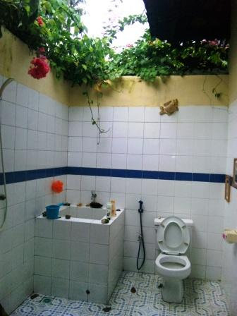
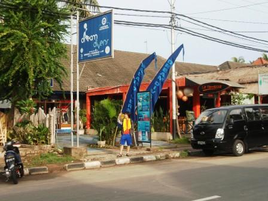
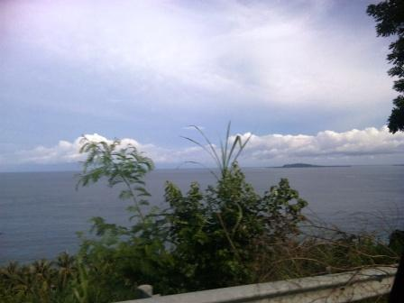
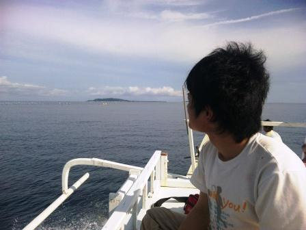
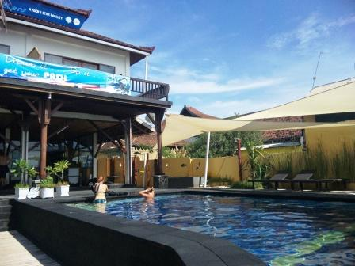
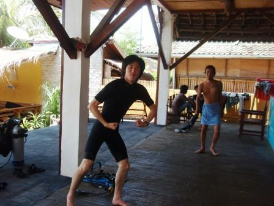
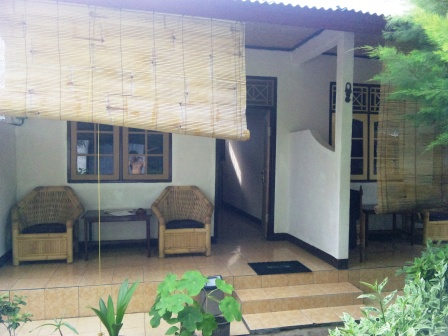
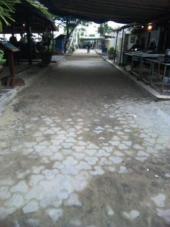
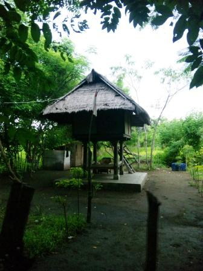
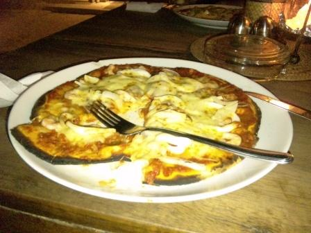

3日目～楽園＝GiliTrawagan～

宿はこんな感じ。蚊帳がついていて、天井にはファンもつけられていた。ジャカルタと違い、あまりムシムシせず熟睡できた。

この宿もシャワーはあった。天井はなく、空が見えているのがとても開放的。

近くの離れで朝食タイム。出されたロンボクコーヒーなるものは、コップに粉を入れ、直接湯を入れたという感じだったが、上澄みだけを飲めばとてもマイルドで美味。

スンギギの町にあるDreamDiversのオフィス前。僕たちがこれからPADIのオープンウォーターダイバーコースのライセンス取得へ向けてお世話になるダイブショップである。挨拶をすると、ダイブショップの人は昨日空港まで迎えに来てくれていたことを知った。飛行機が2時間遅れたことも原因の一つではあるが、僕たちはタクシーで宿に向かうように指示されていたので、連絡がうまく伝わっていなかったようだ。

スンギギから目的地のギリ・トゥラワガンまではまずバンでバンサル港という辺鄙な港まで行く。ロンボクの海岸線は起伏に富んでおり、クネクネのアップダウン豊富なコース。しばらく走ると、沖合に小島が見えてきた。これより西に島がないので、これが僕たちの目的地、バックパッカーのパラダイスといわれるギリ・トゥラワガンに間違いない。

バンサル港からは小型ボートに乗り換えて海路、トゥラワガンへ。地図の通り、ギリ・アイル、メノ、トゥラワガンの3島が隣り合っているのがわかる。ちなみに、ギリとはロンボクに住むササッ人の言葉で小島という意味らしい。トゥラワガンはロンボク北西に浮かぶギリ3島の中で最も大きく、中心が少し盛り上がっている。この丘には昔日本軍のロンボク海峡監視所があったといい、今でも防空壕が残されているという。


島へ着くと、もうそこがDreamDiversのオフィスであった。着後、まず宿探しから始めた。オフィスに併設されたバンガローも勧められたが、少し値が張るのでもう少し安いところがいいと言うと、オフィスの人がいくつか連れて行ってくれた。宿が決まったら早速ライセンス取得へ向け、レッスンが始まる。まずはDVDを小一時間ほど見てダイビングの基礎を学ぶ。それが終わればオフィス前にあるプールの中で早速実践である。インストラクターは刺青のある少しファンキーなお兄さん、と思いきや、後に年齢を聞くと37歳というから驚きである。


プール実習を終え、昼食へと向かう。ダイブショップ前の通りが島のメインストリートになっていて、多くの店が立ち並んでいる。この島には欧米人がとても多く、飲食店も彼らが好みそうなバー形式のレストランがほとんど。日本人らしき人は全く見ない。とあるカフェに入り、パスタを注文。品物を待っていると、ロシ、エナと名乗る少年が話しかけてきた。他愛もない会話を楽しんでいると、キノコのおいしいジュースがあるから飲んでみないかという話をしだした。オイシイヨ、ヤスイヨとやたら強く勧めてくるので1杯だけ注文することにした。彼らは２杯を強く勧めてきたが、これは断らせてもらった。これがこの島での最大の過ちであった。食後の会計の時に、大したことはないのだが２千円ほどを請求されて仰天。６百円程度で済むはずだったからだ。高すぎると主張したが、ちゃっかり黒板の隅にHappy Drinkと書かれていた。しぶしぶ支払いは済ませたが、実は僕たちが飲まされたこのジュース、麻薬の一種であるマジックマッシュルーム入りだったのだ。日本では２００２年から違法となっている。某有名俳優が中毒症状を起こしたことでも知られている。また、このキノコに加えて、この島の人々は平気で大麻を売りつけてくる。その決まり文句は「ハッパハッパ！」である。安易に手を出してしまった観光客が多数つかまっているという事実も後に知ることになるのだが、この点については絶対に気を付けていかなければならないと思った。この島に来た洗礼を浴びせられた感じで、すごく腹が立ったが、今後は絶対に彼らの誘いには応じないように、もっと警戒していかなければならないと心に誓った。

昼食後はもう海洋実習である。機材をダイビングボートに積み、いざ大海原へ。風が気持ちいい。オープンウォーターダイバーコースでは計４回の海洋実習を行うが、最初の２回は水深１２ｍへのダイブである。初回のダイブポイントはBounty。３，２，１の合図とともに海中へとダイブ。レギュレーターから息を吸い、海底へ向けて徐々に深度を下げていく。透き通ったきれいな海水は３０℃程でとても心地よい。何時間でも潜っていれそうだった。海底へ到達しようとしたとき、そこには絶景が広がっていた。サンゴ礁と、無数の熱帯魚たちである。その美しさと感動は、言葉にはできない。山を１時間ハイキングするよりも、海へ１０分ダイブしたほうがはるかに多くの生き物たちに会えるという宣伝文句もうなずけた。

Bountyへのダイビング深度は１２ｍほどであったが、疲労はほとんどなかった。しかし、気圧の大幅な変化のため、耳にかなり違和感が残っている。大井は圧平衡(耳抜き)がうまくできなかったため、相当な我慢をしていた。一度宿、デシ・バンガローへ戻る。しかし、電気がとまっているようだ。熱帯のこの島で、扇風機が使えないのはかなり厳しい。おまけにケータイやデジカメの充電もできない。安いところにしたから電気止めやがったのか！！などと二人で騒いでいたが、後にギリでは電力供給が不安定なため、停電が頻繁に起こるということを知る。しっかり宿のパンフにも書いてあるではないか。もちろん、飲食店や割と高級なホテルでは自家発電装置を備えているようだ。

宿で人休憩した後、この島の散策に出かけることにした。島は南北に２㎞強しかないので、散策にはもってこいのはずだ。これは島のメインストリート。バー形式のレストランが多数並んでいる。

メインストリートを南下していく。道路は未舗装の部分がほとんどである。この島はエンジン付きの乗り物が走れない規則があるため、自動車もバイクも走っていない。主な移動手段は馬車(チドモ)と自転車だ。


内陸の方へ行ってみると、現地住民の民家や空き地が広がっており、たくさんのチキン、ヤギが放し飼いにされている。鶏を見ていると、彼らは本当に頭が悪そうだと思えてくる。放し飼いといっても、ペットではなく、肉用であったり、採卵用であったりするはずなのに、鶏たちは一日中地面をつっついて餌を探すことしか考えていないようだ。ある日仲間が一匹消えてもお構いなし。目の前で仲間が〆られても別段騒ぎは起きない。家の前に餌があれば、逃げることもしないのだ。

内陸を歩いていたが、現在地がどこか分からなくなってしまったので適当に歩いていると、島のほぼ南端付近の海岸線に出た。しばらく海岸線を北上し、島の西側へと来た。島の東側が多くのお店でにぎわっているのに対し、島の西側は店はおろか、民家もあまりない。波のほとんどない穏やかな海岸と、遠くにはバリ島も見える。

島は思ったよりも大きく、だんだん疲れてきた。歩くのもめんどうなので、走っていた馬車に乗せてもらった。再び島の東側に出て、バーレストランへ。この島の物価は少し高めで、ピザが一枚４００円程度。シーフードピザを注文したが、このお店のピザ、注文してから石釜で焼いてくれるという本格的なもの。島国だけあって海鮮はどれも美味で、満足できるものだった。ただし、ピザでは全くインドネシアの雰囲気はしないが。
翌日へ